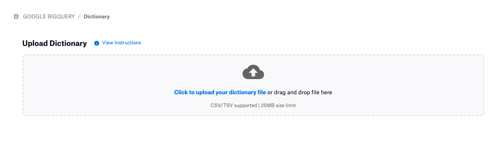
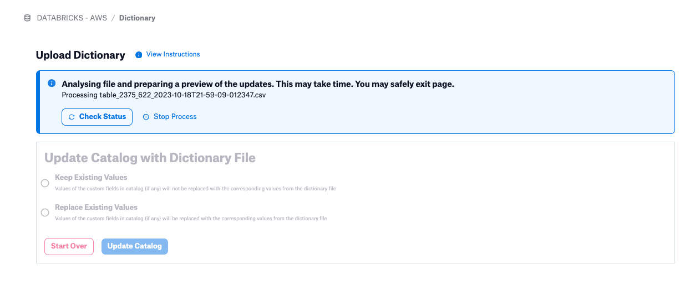
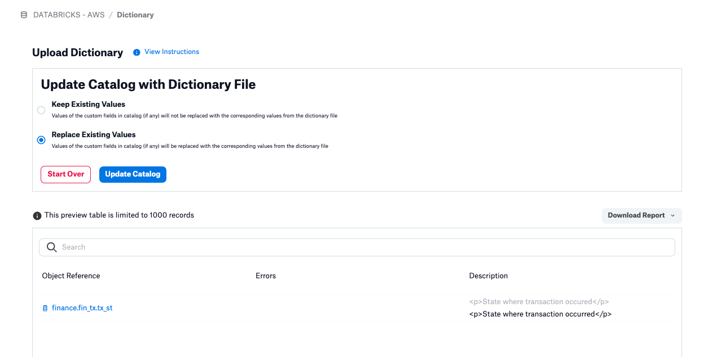
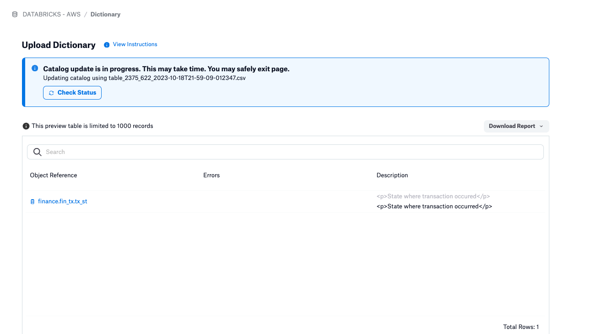

Importing a Data Dictionary in Alation 2023.3.2 and Later¶
Alation Cloud Service Applies to Alation Cloud Service instances of Alation
Customer Managed Applies to customer-managed instances of Alation
You can import a data dictionary into Alation to bulk-edit field values for a data object. Uploading a data dictionary can update the values of existing fields, but it cannot add fields to or remove fields from the data object templates.
Alation also offers APIs both for uploading a data dictionary and for uploading custom field values in bulk.
By uploading a data dictionary, you can:
Fill empty custom fields with new values from the imported dictionary.
Overwrite the existing field values with new ones from the imported dictionary.
The source file can be streamlined to include the keys of only those data objects that need to be updated and the fields to be updated. There is no need to import the full dictionary. For example, if you want to update only one field on one data object, you can create a source file that includes only the key of this data object, the name of the field to be updated, and the new value.
To import successfully, make sure your data dictionary CSV/TSV source file conforms to the Requirements for CSV/TSV Source Files.
Important
If your source CSV file includes Unicode characters, make sure it is encoded in UTF-8.
Important
Source files must have unique field names. Duplicate field names are not permitted and validation includes verifying imported field names against both custom field names and built-in field names. A warning message appears when an uploaded file conflicts with an existing field name.
Example: If you have a custom field called description included in the data dictionary file you are attempting to upload, you get an error because of the conflict with the built-in description field in the catalog.
Importing a Data Dictionary from a CSV or TSV File¶
A new, faster, asynchronous data dictionary upload procedure is available from Alation version 2023.3.2. All users with Steward role and above can perform a data dictionary upload. Both object-level and field-level permissions are taken into consideration when updates are requested.
If you are loading a large data dictionary and notice the upload taking an exceptionally long time, the feature flag alation.feature_flags.disable_perm_check_on_upload_dd can be set to True using alation_conf. This flag, which should be used with caution, disables permission checks during the upload process and limits the upload dictionary functionality to Catalog Admins and Server Admins only.
Note
Alation Cloud Service customers can request server configuration changes through Alation Support.
Note
The procedure described here is for updating an existing data source. If you are migrating information to a newly populated data source, see Data Migration.
To import a data dictionary from a CSV/TSV file:
Sign in to Alation and open the catalog page of a data source, schema, or table.
In the upper-right corner, click More, and then click Upload Dictionary. The Upload Dictionary page opens:
Drag and drop your file in the drag-and-drop area, or press Click to upload your dictionary file. The maximum file size is 25MB. After you drag and drop or upload, Alation parses the source file and displays a dialog saying the file is being analyzed and the preview is being prepared:
Click Check Status to see the current status, or continue working. An email will be sent to you when the analysis is complete. Click the View in Alation link in the email or click Check Status to view the preview table, which includes any errors that may have occurred as well as the pending changes:
The preview shows what is going to be updated vs. what is going to be ignored:
The “active” values that are going to be updated appear in darker font color.
The “disabled” values that are going to be ignored or overwritten appear in lighter font color. If you switch between the upload options, the font color toggles between “active” and “disabled” values.
Click Download Report to download the full preview report, or, if errors are present, you can choose to download only the errors. Correct any errors and re-upload the data dictionary before proceeding. You can also choose to proceed to the next step with open errors. The update will be performed on non-erroneous records.
On the preview page, specify how existing field values are to be handled:
Keep Existing Values: If this option is selected, only the new values for empty fields are uploaded from the data dictionary. This option gives precedence to values that currently exist in the catalog over the values for these fields contained in the imported data dictionary. In other words, this option loads the new values for previously empty fields, and does not change the values that already exist in the catalog.
Replace Existing Values: If this option is selected, the values in the dictionary overwrite the values that currently exist in the catalog. This option uploads both the new values for empty fields and updates the existing values with values from the dictionary.
Click Update Catalog to finish the import. A dialog appears informing you that this action cannot be cancelled, and asking if you want to proceed. Click Yes to update the catalog.
You see a message saying the catalog update is in process:
Click Check Status to see the progress. If the update is complete, you see a message telling you so.
(To upload a data dictionary in Alation versions before 2023.3.2, see Importing a Data Dictionary in Alation 2023.3.1 and Earlier.)
Data Migration¶
If you are migrating data curation from one data source to another, you perform the same steps as for updating a single data source, but you may need some additional preparation. If you are starting from a downloaded data dictionary, be aware that from Alation version 2023.3.2, those downloaded data dictionaries include a column al_datadict_item_properties, which contains object IDs that greatly facilitate efficient resolution of catalog updates through the dictionary upload. However, those object IDs may not be accurate in a different data source or instance. Thus, in the migration scenario, we recommend that you remove the al_datadict_item_properties column before uploading the edited data dictionary.
For users who attempted migration scenarios with a 2023.3.2 data dictionary and encountered errors, Alation offers two potential solutions:
Update the data dictionary manually using the Requirements for CSV/TSV Source Files, in particular the advice to triple-quote (
""") any value containing a period (.).Request a migration script from Alation Support; this requires two downloaded data dictionaries, one from the original data source and one from the target data source, and then matches objects and produces a final, uploadable data dictionary from the two.
Requirements for CSV/TSV Source Files¶
The source CSV/TSV file must include the head with field names in the required format and the field values for each of the data objects to be updated.
Head¶
Element |
Is required |
Description |
|---|---|---|
al_datadict_item_properties |
No |
A column in the downloaded data dictionary containing object IDs and object types for each object. Should be considered read-only |
al_datadict_item_column_data_type |
No |
A column in the downloaded data dictionary containing data types for each data column in included tables. Should be considered read-only |
Key |
Yes |
If any component of the key has an internal period, that component only should be triple-quoted. For example, if a schema has the name The data source object uses an empty key. |
Title |
Only if it is updated |
The title of the data object. |
Description |
Only if it is updated |
The description of the data object. |
All Custom Fields names to be updated |
Only if the field is updated |
The list of custom field names in the required format which will depend on the field type. |
Sample Head
key,title,description,summary,country,expert:user,relatedtable:table,test:article,test:attribute,test:data,test:groupprofile
Custom Field Format for Upload¶
Object Set¶
The definition for the Object Set custom field must include the name of
the field and the object type of the value in the following format: "field name:object type"
When uploading values for the Object Set field, you need to be aware of the Permitted Types included into this field. Overall, an Object Set custom field can refer to any combination of the following object types:
Data source
Schema
Table
Column
User
Group
Article
Term (2023.3.4 and later)
Policy (2023.3.4 and later)
For each Permitted Object that can be included in the field, you will need to add the associated object type. Use the following definitions:
Alation Object |
Associated object type to be used in CSV/TSV head |
Object set value format |
Example |
|---|---|---|---|
data source |
data |
<datasource_id> |
70 |
schema |
schema |
<datasource_id>.<schema_name> |
70.schema1 |
table |
table |
<datasource_id>.<schema_name>.<table_name> |
70.schema1.tableA |
column |
attribute |
<datasource_id>.<schema_name>.<table_name>.<col_name> |
70.schema1.tableA.volleyball |
user |
user |
<username> |
|
group |
groupprofile |
<groupname> |
Group 1 |
article |
article |
<article_name> |
Test Article |
term |
glossary_term |
<term_name> |
Privacy |
policy |
business_policy |
<policy_name> |
Customer Access Policy |
Important
As the name of the Object Set field in the source file, use its Name Singular property. From Alation version 2023.3.3, you can also specify the object set’s object ID, or a combination of the name and object ID, in the form
object_id | object_name. Using an object ID can improve performance in updating from an uploaded data dictionary.For each Permitted Type included in the field, add an individual entry to the head of the file. For example, if the object set field
testcan reference columns and articles, the head should include individual definitions for either columns (test:attribute) or articles (test:article) (if one type of value is being updated) or both (if both types of value are updated):test:attribute,test:article.If you are uploading data object names as values, you need to use the qualified name of the object as the value, including the data source ID. For example:
70.schema1- value forschema1in data source with id =7070.schema1.tableA- value for tabletableAinschema1in data source with id =7070.schema1.tableA.volleyball- value for columnvolleyballintableAinschema1in data source with id =70
Example:
Assume that there is an Object Set field Test on the catalog
page of a Data Source A. The field includes all Permitted Types.
You want to import values for this field using a data dictionary. The
definition of the field Test that you need to include into the file
head will look like this:
test:data,test:schema,test:table,test:attribute,test:article,test:groupprofile,test:user,test:glossary_term,test:business_policy
The actual values may look like this:
70,70.schema1,70.schema1.tableA,70.schema1.tableA.volleyball,Article About Schema1,qagroup,allie.robot@alation.com,Privacy,Customer Access Policy
Multiple values for the same object type should be separated by semicolons:
70.schema1;70.schema2;80.schema1
People Set¶
The definition for the People Set custom field must include the name of the field and the definition for the object name that is referenced by the value in the following format: field name:object type
For People Set, you can use two object types:
user
groupprofile
Each of these types must have an individual entry in the file head.
Example:
Assume that there is a People Set field Expert on the catalog page of a Data Source A.
You want to import a value for this field Bill Travis. Bill has an account in Alation with the username bill.travis@example.com.
The definition of the field Expert that you need to include into the
file head will look like this:
expert:user
The actual value to be uploaded will look like this:
bill.travis@example.com
If the set of values to be uploaded includes both users and groups, then the head should include individual definitions for both the object types and will look like this:
expert:user,expert:groupprofile
The actual value to be uploaded will look like this:
bill.travis@example.com,qa group
Multiple values for one type of value must be separated by semicolons:
bill.travis@example.com;andy.smith@example.com;terry.rauch@example.com
Reference¶
For the Reference type of field, the head must use the following format: field name:object type
Permitted object types and the format are the same as for Object Set.
Picker¶
For the Picker type of field, the head must use the following format: field name
Example:
Head:country
Value:Romania
Multi-Select Picker¶
Head requirements for this field type are the same as
for Picker. Because there can be multiple values added to the field of this type, the
multiple values must use the following format: "[""Value1"",""Value2"",""Value3""]"
The special value "[]" resets the value of the multipicker field.
Example:
The field Countries is a multi-select picker:
Head: countries
Values: "[""Germany"",""Canada"",""Korea""]"
Rich Text¶
For the Rich Text type of field, the head must use the following format: field name
The value must use the value format. For example: This is a short summary.
Date¶
For the Date type of field, the head must use the following format: field name
The value must use the YYYY/MM/DD format. For example: 2019/02/17.
Summary Table¶
Custom Field Type |
Format for Head |
Example for Head |
Format for Uploaded Value |
Value Example |
|---|---|---|---|---|
Object Set |
|
|
|
|
People Set |
|
|
|
|
Reference |
|
|
|
|
Picker |
|
|
|
|
Multi-Select Picker |
|
|
|
|
Rich Text |
|
|
|
|
Date |
|
|
|
|
Special Characters in Custom Field Names¶
The data dictionary upload process considers some characters as special for its own formatting. Custom field names containing such characters require special formatting:
If a custom field name contains a pipe (
|) or colon (:) character, the whole field name should be wrapped in quotes ("").If a custom field name contains a comma (
,), the whole field name should be wrapped in quotes ("") and the comma should be escaped with a backslash (\).
The following table shows how some sample custom field names should appear on the column header line for different use cases:
Custom Field name |
Column Header format |
|---|---|
sample-custom-field-name |
…,sample-custom-field-name,… |
space separated custom field name |
…,space separated custom field name,… |
Role, Responsibility, Duty |
…,”role\, responsibility\, duty”,… |
Owner | Custodian (a people-set field) |
…,”owner | custodian”:user,”owner | custodian”:groupprofile,… |
Related: Objects (an object-set field) |
…,”related: objects”:data,”related: objects”:schema,”related: objects”:glossary_term |
Sample CSV¶
al_datadict_item_properties,al_datadict_item_column_data_type,key,title,description,contains pii,critical data element,data quality policies,data quality status,data quality summary,derived term:glossary_term,description,expert:groupprofile,expert:user,master/ref/transactional,migration type,pii classification,relevant data:article,relevant data:attribute,relevant data:business_policy,relevant data:glossary_term,relevant data:table,relevant policy:business_policy,rp gdpr processing basis,security classification,status,steward:groupprofile,steward:user,subject matter expert:groupprofile,subject matter expert:user
oid=2821;otype=table,,finance.fin_spnd_sgmnt,Financial Spend Segment,,,N/A,N/A,,,N/A,,N/A,N/A,N/A,,N/A,N/A,N/A,N/A,N/A,N/A,,,N/A,N/A,,,,
oid=41699;otype=attribute,INT,finance.fin_spnd_sgmnt.spnd_sgmnt_cd,Spend Segment Code,,,,,,N/A,,,,,,N/A,,,,,,,,N/A,,,,,N/A,N/A
oid=42379;otype=attribute,STRING,finance.fin_spnd_sgmnt.spnd_sgmnt_desc,Spend Segment Description,,,,,,N/A,,,,,,N/A,,,,,,,,N/A,,,,,N/A,N/A
oid=42148;otype=attribute,STRING,finance.fin_spnd_sgmnt.spnd_sgmnt_nm,Spend Segment Name,,,,,,N/A,,,,,,N/A,,,,,,,,N/A,,,,,N/A,N/A
oid=42723;otype=attribute,INT,finance.fin_spnd_sgmnt.spnd_sgmnt_sts,Spend Segment Status,,,,,,N/A,,,,,,N/A,,,,,,,,N/A,,,,,N/A,N/A